[南港] Neverland Noodle Bar 麵吧
| 餐廳名稱: | Neverland Noodle Bar 麵吧 |
|---|---|
| Nerverland FB粉絲團 | |
| 地 址: | 台北市南港區南港路一段271號 |
| 營業時間: | 週一至週五 11:00-15:00，17:30-21:00 最後點餐時間 14:30 / 20:30 |
| 週末例假日 11:00-21:00 最後點餐時間 20:30 |
這是知名美食記者王大小姐之前推薦的餐廳，是一間老牌麵粉廠創辦的餐廳， 店裡面所有的麵條，自然是自家的麵粉做的。王大小姐很誇獎這間餐廳， 今天來到附近，就來嘗試看看。
Nerverland 旁邊巷子有些許停車位，不過早就被停滿了。巷子再進去一點 有一間味全的配銷所，它的斜對角有私人停車場，約11點半到，還有幾個停車位。 吃完飯回到這停車場，已經全滿了，熱門時段也不好停。
來到門口一看，搞清楚了，原來分義大利麵餐廳跟中式精緻麵食餐廳兩間，各有自己的入口， 裝潢都很精美。義大利麵餐廳 還有 烘焙坊、咖啡等。今天選 中式精緻麵食餐廳，詢問 服務生後得知，廚房是兩間相通的，中式精緻麵食餐廳裡面其實可以請服務生拿義大利麵 餐廳的菜單，只是一半以上的人必須點中式餐點，避免客人全擠在中式麵食餐廳吃義大利麵。
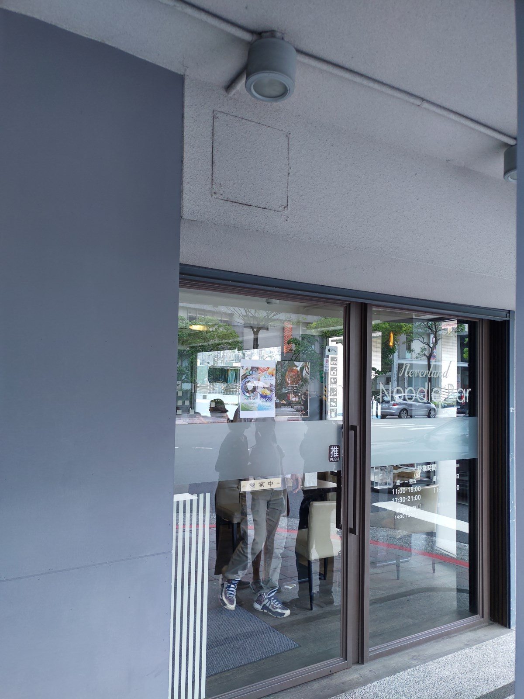 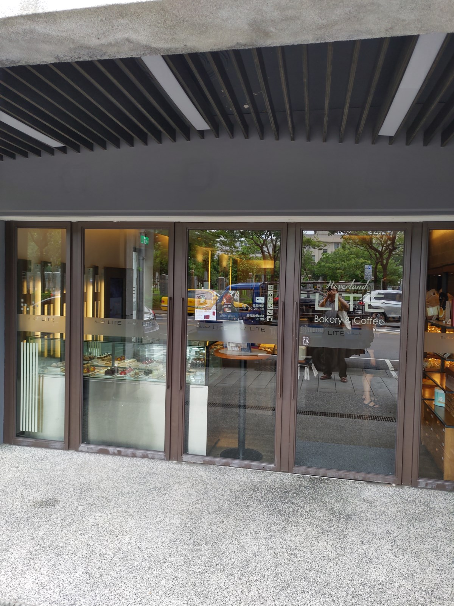
這兩間餐廳的主題是精緻化用餐，內部的裝潢自然是挺不錯的。而且感覺有很多友善 客人的小地方，像我們坐窗邊，有設計個窗檯，擺東西蠻方便的。 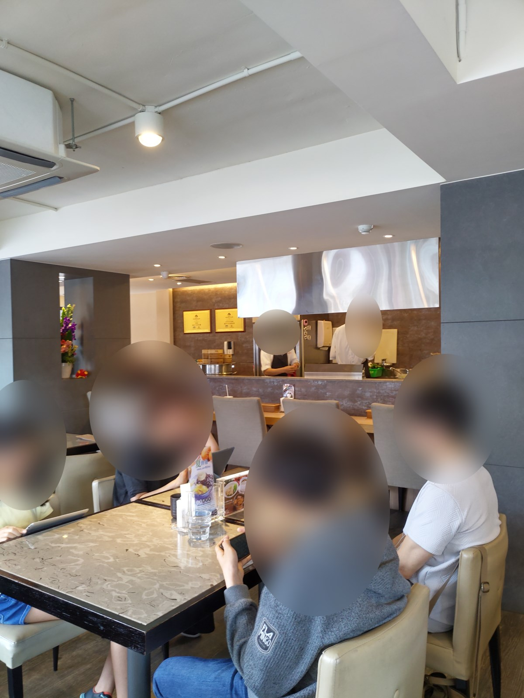 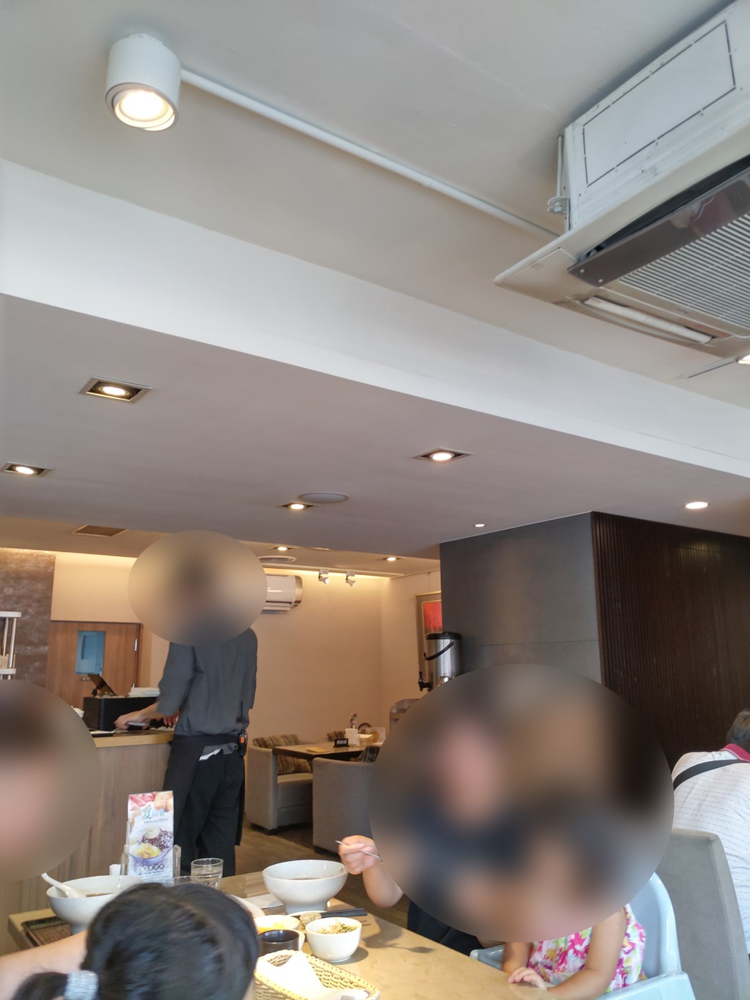
牆壁上的掛畫，看著看著就動了，原來是類似數位相框的東西。感覺是一分鐘換一張吧， 下面這張是右邊換到一半，左邊沒動。 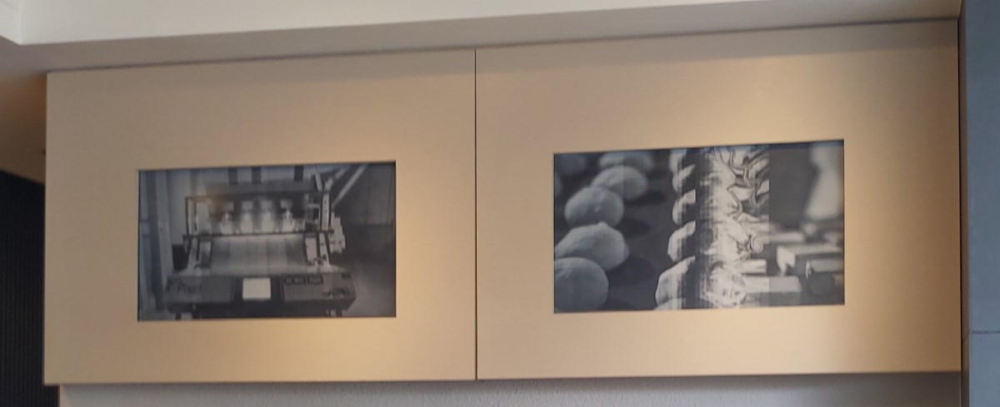
然後左邊換到一半，右邊已經換好了。 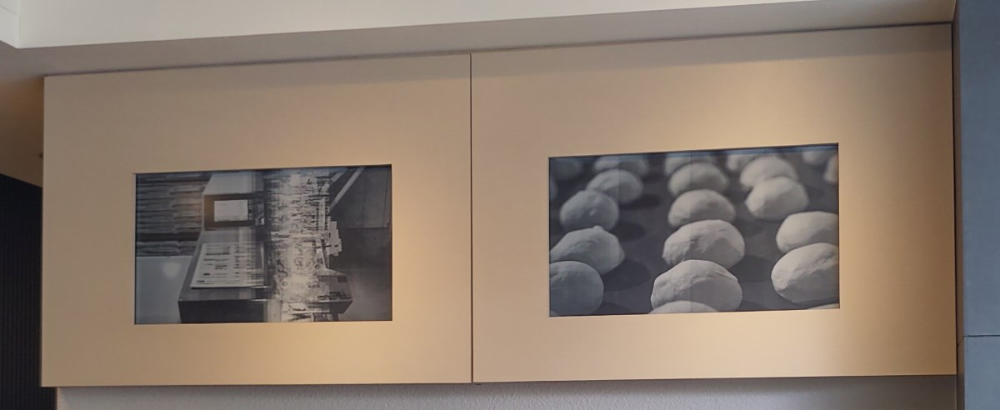
這是左右兩邊都換好了，大約靜置一分鐘吧。看起來是將老麵粉廠的許多黑白歷史相片 不斷地展示。 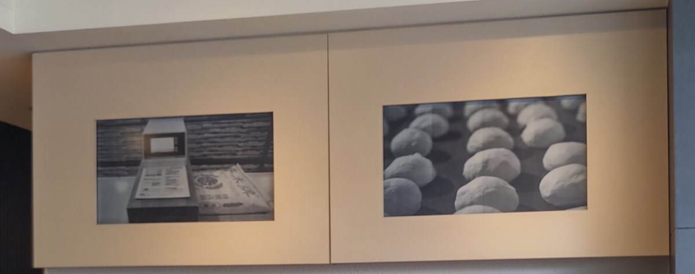
完整菜單好幾頁，請讀者去 Neverland 官方網站菜單 看吧。下面這兩張圖是擺在座位旁邊的壓克力所放的圖，大概是 主打的項目吧。 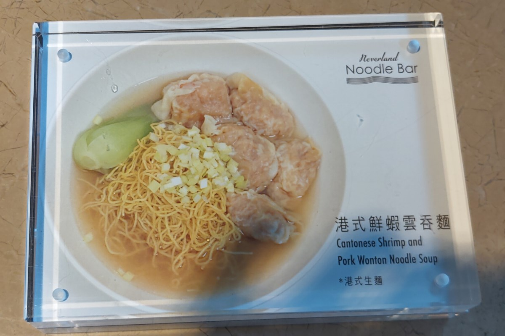 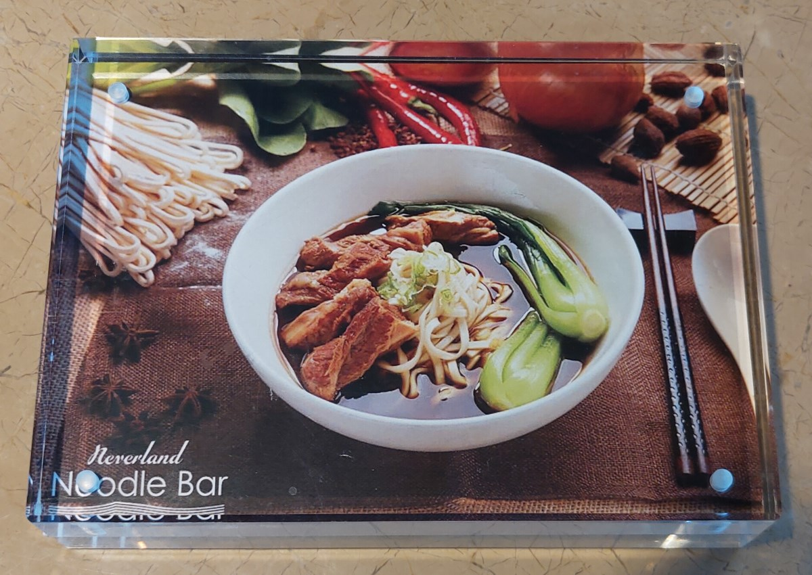
下圖右邊這個茶要好好的誇獎一下，服務生帶位之後，就會詢問要茶還是水，由他們 端來，補充也是由服務生補充，這是高級餐廳通常的做法。然後這個茶很香， 感覺是高級茶葉，不會因為免費就用很普通的茶葉，不由自主地多喝了幾口。
只有點一份 B 組合，選了咖啡與豬耳朵。豬耳朵滷的有點入味，可是我還是想弄點醬油膏啊。 環顧四週，似乎因為是高級餐廳，沒有自助式醬料區。 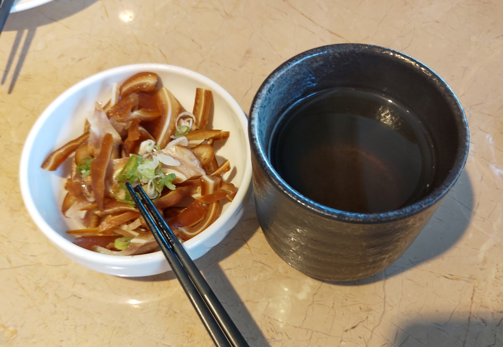
鮮蝦雲吞麵 先上來，這道菜麵條不能選，只能用細麵。 麵條感覺煮得不錯，軟硬適中。湯頭也熬得好喝，香氣濃郁。港式雲吞皮軟餡香。 三大要素都是高分。 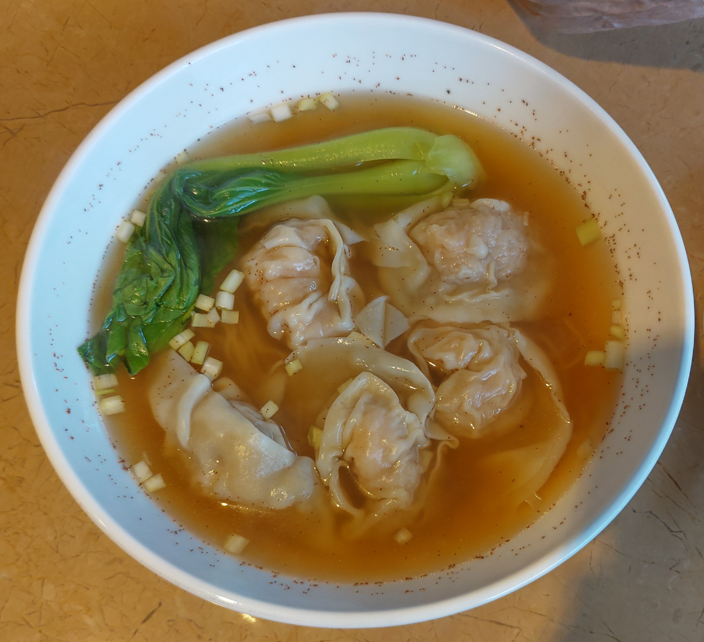
炸排骨 與 B組合的咖啡上來了。炸排骨 厚度不錯，炸到剛好全熟，鹹度適中，只是 重口味的我，可能希望焦一點點，更鹹一點。但是這個炸排骨已經挺不錯了。 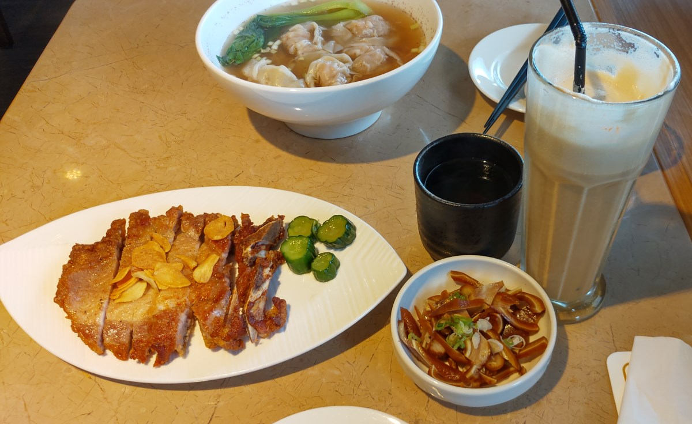
半牛腩半筋紅燒牛肉麵，這道菜可以選麵條種類，我選了寬麵，覺得比較配紅燒牛肉 湯頭那種粗曠的風格。整碗麵，牛肉軟，牛筋嫩，湯頭香濃，幾乎不辣，麵條有勁道， 算是還不錯的牛肉麵。 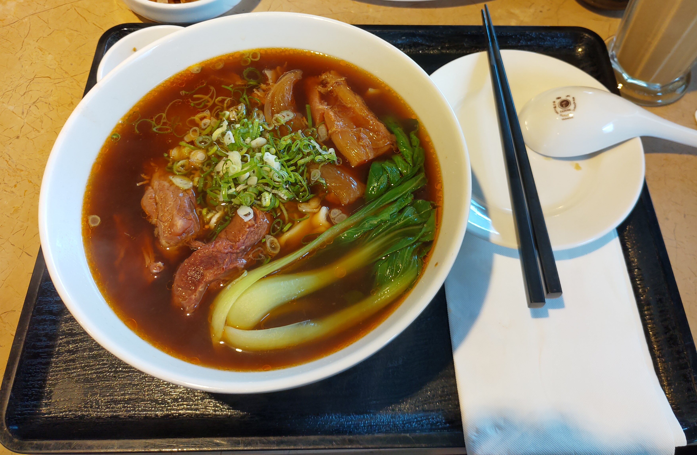
用完餐，去廁所一下，發現另一個友善客人的設計，地板那個鐵網蓋底下是流動的水， 隨著小便斗沖水，鐵網蓋底下也沖水，這等於隨時保持清潔，真是蠻方便的。 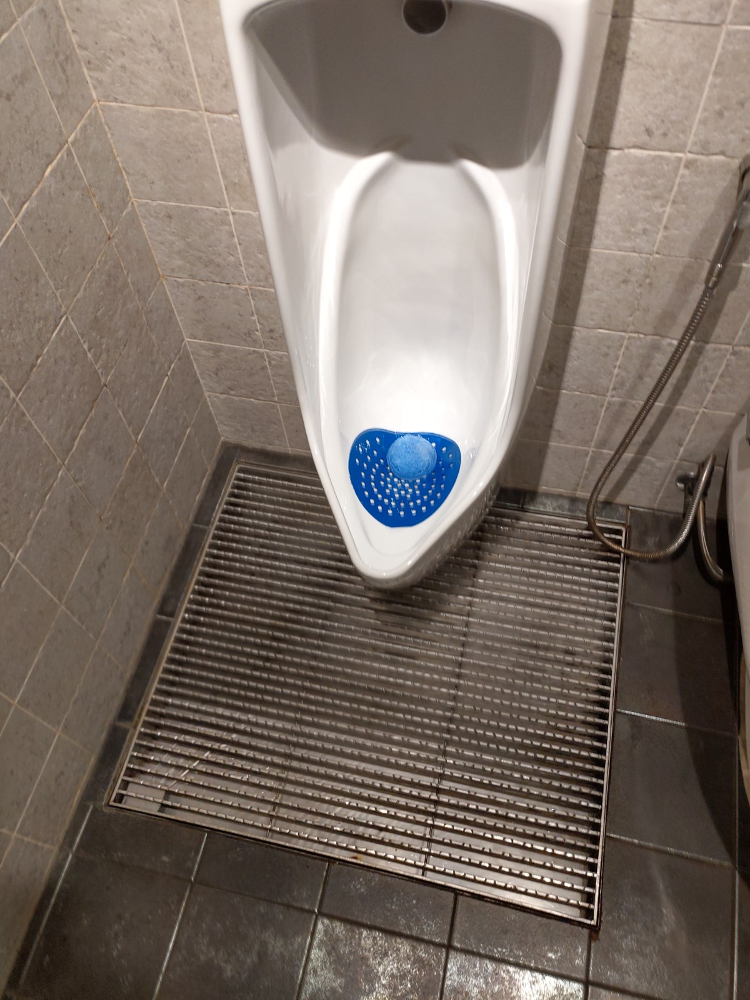
出門後，跑去 Nerverland 義大利麵餐廳的烘焙坊逛逛，買幾個麵包，水準尚可， 當然沒到 野上麵包那麼驚豔的程度，但也可以了啦。 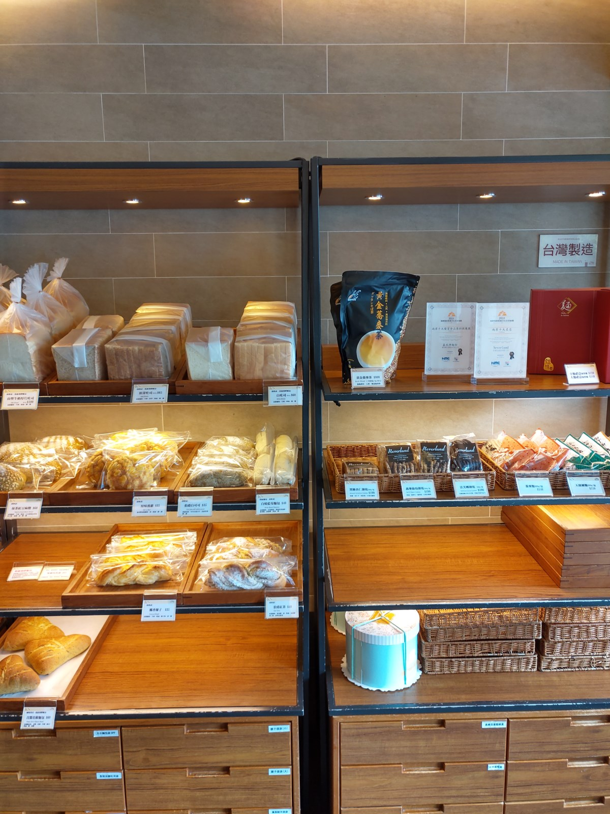
Neverland 的定位，應該是走高級餐廳路線，食材也用的不錯，價格比不重視裝潢的小吃店 高很多，比知名廚師開設的高級餐廳便宜，氣氛營造的不錯，是蠻適合跟朋友約吃飯 的餐廳，吃中式麵食的同時，想點義大利麵也可以，還有飲料，方便聊天。有機會， 可以來這邊用餐。